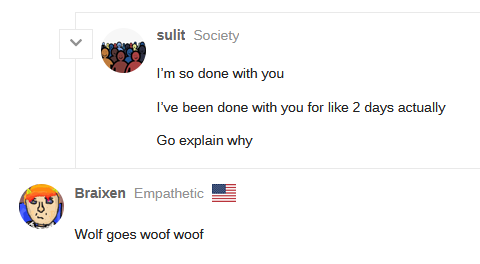

Although no, I think I get what you are saying. They had TMI that Amelia’s slot is town so they were pushing against that lynch for towncred.
Don’t mind me, it’s almost 12 AM and I haven’t slept since last night.
But Seth is still a convert in this scenario, right? Does that make starting team Kyo/Marshal/Kat, then?
You very much should get some sleep
No sleep for 24 hour period is disastrous
Thank you, I’m… somewhat used to it. I’ll go soon <3
Yes
Alternatively Katze could be replaced with Apprentice
It’s the most likely team here imo
Too late though
Arete is definitely LW for their EoD2 trying to distract people
Yeah, at this point I think its a very safe Congregation loss.
I mean, Kyo’s bait (which I think was very obvious but we are discussing it from our isolated vantage point, so eh) right into switcheroo on Kat/Marshal… And they get two nightkills tonight.
This game is basically over, the best they can do is attempt to make some good plays.
I still think that Kat has to be starting groupscum in this scenario. Or at the very least the first convert – his behavior doesn’t make much sense otherwise.
I feel…bad for ici
He brings up a valid scenario too, I guess?
https://forum.imperium42.com/t/fm-ritual-mafia-iv-day-3-lynch-phase-10-16/81237/12908?u=anstreim
If Marshal is a D2 convert then it kind of explains their interactions but he still voted for Apprentice D2. The wagons were almost even there.
Hmm
That’s a fair point
But I’m unsure where last slot fits into it
Mmmm, I still think if we presume that this theory is true, then we are sitting at:
Kyo [Sorcerer], Marshal [Shaman], Kat [Seer?] – OG Groupscum;
Seth [1st convert > Sorcerer], Alice [2nd convert > Shaman];
Arete [Traitor]?
Going to leave this here because its hilarious.

1 Like
Sulit is just scum
I’m eating my words
Starting on convert? And who is scum with her?
Reminder, Kat, Arete and I want to say Alice all seem content with lynching her.
Also was there ever a mention of Ritual being precisely swapped off of Kat, or did Marshal win because of a draw? Because I think if it was a win by draw:
Chosen One (Passive) - If there is a draw during a sacrifice vote involving you or the target of your “Soul Exchange” you will be sacrificed. (If the draw involves both your target has priority)
They can both still be scum.
Starting
Saying Katze scum requires jumping through a lot of hoops, especially given that there have been a lot of questionable plays that Katze had to have made to be starting scum
Mechanically ye, I agree
I’m more focused on Katze’s individual play though
Also Marshal is 100% convert after some thought
I’m kind of shaky on what else is up
So she would have to be a Shaman/Seer (if we presume Marshal was a convert) or precisely a Seer right now. Her claim is a Conjurer, and her logs so far are:
N1: Occupy Jgoes Vulgard;
N2: Occupy Arete.
If Vul visited themselves and we believe that to be true on n2, then we have both a shaman swap and a shaman soul thingy
The soul one is accounted for